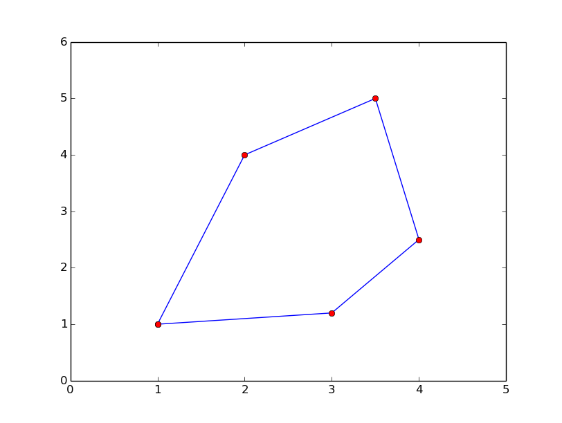
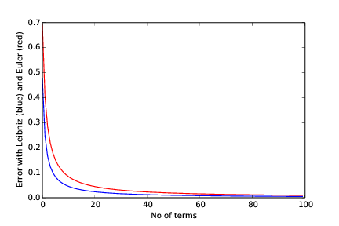
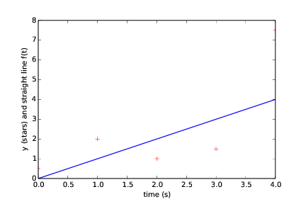

Exercises
Exercise 10: Introducing errors
Write the program ball_function.m as given in the text and
confirm that the program runs correctly. Then save a copy of the
program and use that program during the following error testing.
You are supposed to introduce errors in the code, one by one. For each error introduced, save and run the program, and comment how well Matlab's response corresponds to the actual error. When you are finished with one error, re-set the program to correct behavior (and check that it works!) before moving on to the next error.
a)
Change the first line from function ball_function() to
ball_function(), i.e. remove the word function.
Running the program gives an error message containing
Error: Unexpected input at line number: 9
as well as the name of the file in which this problem occurred. The last part of the error message reads:
fprintf('%f \n',vertical_position);
end
^
Matlab reacts to the word end here. However, (as we know) end is correctly
used and placed, the problem is rather that the word function to which end
was supposed to match, is not there! So, Matlab responds by stating that it
does not understand the word end. With such error messages, the programmer has to
understand whether end is to be removed, or if some other keyword (here function)
lacks in the above.
b)
Change the first line from function ball_function()
to function ball_func(), i.e., change the name of the function.
The program runs as before, i.e. no error messages. This is because Matlab
understands that the (main or first) function in the file ball_function.m
is supposed to be run, even if the name of that function is not the same as
the name of the file in which the function definition is located.
c)
Change the line function result = y(t) to function y(t).
Running the program gives an error message containing the line in which Matlab found a problem (line 4 here), as well as a message telling us what seems to be wrong
Error: Too many outputs to function y
Again, there is a mismatch between the function y(t) as it now (wrongly) is
defined and the way it is used. In the erroneous definition, we have not specified
in the header of the function that there is to be a return value from the function.
Therefore, when we state in line 4 that we want the return value from the function
to be stored in vertical_position, Matlab gets a problem.
d)
Change the line function result = y(t) to
function result = y(), i.e., remove the parameter t.
Running the program gives an error message containing the line in which Matlab found a problem (line 4 here), as well as a message telling us what seems to be wrong
Error: Too many inputs to function y
Again, there is a mismatch between the function y as it now (wrongly) is
defined and the way it is used. In the erroneous definition, we have not specified
that the function should have an input parameter. Therefore, when we (in line 4) call
the function with a parameter, Matlab gets a problem.
e)
Change the first statement that calls y from
vertical_position = y(time); to vertical_position = y();.
Running the program gives an error message containing the line in which Matlab found a problem (line 4 here), as well as a message telling us what seems to be wrong
Error: Undefined function or variable t
This message tells us that the input parameter t does not get any value assigned.
We have defined the function to take one parameter, but we call it without any parameter.
Filename: introducing_errors.m.
Exercise 11: Compare integers a and b
Explain briefly, in your own words, what the following program does.
a = input('Give an integer a: ');
b = input('Give an integer b: ');
if a < b
fprintf('a is the smallest of the two numbers\n');
elseif a == b
fprintf('a and b are equal\n');
else
fprintf('a is the largest of the two numbers\n');
end
Proceed by writing the program, and then run it a few times with
different values for a and b to confirm that it works as
intended. In particular, choose combinations for a and b so that
all three branches of the if construction get tested.
The program takes two integers as input and checks if the number a is
smaller than b, equal to b, or larger than b. A message is printed
to the screen in each case.
Filename: compare_a_and_b.m.
Exercise 12: Functions for circumference and area of a circle
Write a program that takes a circle radius r as input from the user
and then computes the circumference C and area A of the
circle. Implement the computations of C and A as two separate
functions that each takes r as input parameter. Print C and A to
the screen along with an appropriate text. Run the program with \( r =
1 \) and confirm that you get the right answer.
The code reads:
circumference = @(r) 2*pi*r;
area = @(r) pi*r^2;
r = input('Give the radius of a circle: ');
C = circumference(r);
A = area(r);
fprintf('Circumference: %g , Area: %g\n', C, A);
Running the program, choosing r = 1, gives the following dialog:
Give the radius of a circle: 1
Circumference: 6.28319 , Area: 3.14159
Filename: functions_circumference_area.m.
Exercise 13: Function for area of a rectangle
Write a program that computes the area \( A = b c \) of a rectangle. The values of \( b \) and \( c \) should be user input to the program. Also, write the area computation as a function that takes \( b \) and \( c \) as input parameters and returns the computed area. Let the program print the result to screen along with an appropriate text. Run the program with \( b = 2 \) and \( c = 3 \) to confirm correct program behavior.
The code reads:
area = @(s1, s2) s1*s2;
b = input('Give the one side of the rectangle: ');
c = input('Give the other side of the rectangle: ');
A = area(b, c);
fprintf('Area: %g\n',A);
Running the program gives the following dialog:
Give the one side of the rectangle: 2
Give the other side of the rectangle: 3
Area:
ans = 6
Filename: function_area_rectangle.m.
Exercise 14: Area of a polygon
One of the most important mathematical problems through all times has been to find the area of a polygon, especially because real estate areas often had the shape of polygons, and it was necessary to pay tax for the area. We have a polygon as depicted below.

The vertices ("corners")
of the polygon have coordinates \( (x_1,y_1) \), \( (x_2,y_2) \),
\( \ldots \), \( (x_n, y_n) \), numbered either in a clockwise or
counter clockwise fashion.
The area \( A \) of the polygon can amazingly be computed by just knowing the
boundary coordinates:
$$ A = \frac{1}{2}\left| (x_1y_2+x_2y_3 + \cdots + x_{n-1}y_n + x_ny_1)
- (y_1x_2 + y_2x_3 + \cdots + y_{n-1}x_n + y_nx_1)\right|\thinspace .$$
Write a function polyarea(x, y) that takes two coordinate arrays
with the vertices as arguments and returns the area.
Assume that x and y are either lists or arrays.
Test the function on a triangle, a quadrilateral, and a pentagon where you can calculate the area by alternative methods for comparison.
Code:
% Computes the area of a polygon from vertex
% coordinates only.
function area = polyarea(x, y)
n = length(x);
% next we may initialize area with those terms in the
% sum that does not follow the "increasing index pattern"
area = x(n)*y(1) - y(n)*x(1);
for i = 1:(n-1)
area = area + x(i)*y(i+1) - y(i)*x(i+1);
end
area = 0.5*abs(area);
end
The simple tests may be executed by running another function (test_polyarea.m) that
calls the former:
% pentagon
x = [0 2 2 1 0];
y = [0 0 2 3 2];
fprintf('Area pentagon (true value = 5): %g\n', polyarea(x, y));
% quadrilateral
x = [0 2 2 0];
y = [0 0 2 2];
fprintf('Area quadrilateral (true value = 4): %g\n', polyarea(x, y));
% triangle
x = [0 2 0];
y = [0 0 2];
fprintf('Area triangle (true value = 2): %g\n', polyarea(x, y));
Filename: polyarea.m.
Exercise 15: Average of integers
Write a program that gets an integer \( N > 1 \) from the user and computes the average of all integers \( i = 1,\ldots,N \). The computation should be done in a function that takes \( N \) as input parameter. Print the result to the screen with an appropriate text. Run the program with \( N = 5 \) and confirm that you get the correct answer.
The code reads:
function average_of_N_integers()
N = input('Give an integer > 1: ');
average1toN = average(N);
fprintf('The average of 1,..., %d is %g\n', N, average1toN);
end
function result = average(N)
sum = 0;
for i = 1:N
sum = sum + i;
end
result = sum/N;
end
Running the program gives the following dialog:
Give a positive integer > 1: 5
The average of 1,..., 5 is: 3
Filename: average_1_to_N.m.
Exercise 16: While loop with errors
Assume some program has been written for the task of adding all integers \( i = 1,2,\ldots,10 \):
some_number = 0;
i = 1;
while j < 11;
some_number += 1
print some_number
a) Identify the errors in the program by just reading the code and simulating the program by hand.
There is a semicolon at the end of the while loop header which should not be there.
There is use of += within the loop, which is wrong in Matlab (the correct way of
updating the variable is shown in the corrected program below). Furthermore, 1 is added instead
of i. There is no increase of the loop variable i. Finally, the word print will give
an error in Matlab. The printing should use fprintf as shown below.
b) Write a new version of the program with errors corrected. Run this program and confirm that it gives the correct output.
The code reads:
some_number = 0;
i = 1;
while i < 11
some_number = some_number + i;
i = i + 1;
end
fprintf('The sum: %d\n', some_number)
Running the program gives 55 as the answer.
Filename: while_loop_errors.m.
Exercise 17: Area of rectangle versus circle
Consider one circle and one rectangle. The circle has a radius \( r =
10.6 \). The rectangle has sides \( a \) and \( b \), but only \( a \) is known from
the outset. Let \( a = 1.3 \) and write a program that uses a while loop
to find the largest possible integer \( b \) that gives a rectangle area
smaller than, but as close as possible to, the area of the circle. Run
the program and confirm that it gives the right answer (which is \( b =
271 \)).
The code reads:
r = 10.6;
a = 1.3;
circle_area = pi*r^2;
b = 0; % chosen starting value for other side of rectangle
while a*b < circle_area
b = b + 1;
end
b = b - 1; % must reverse the last update to the right value
fprintf('The largest possible value of b: %d\n', b);
Running the program gives 271 as output for b.
Filename: area_rectangle_vs_circle.m.
Exercise 18: Find crossing points of two graphs
Consider two functions \( f(x) = x \) and \( g(x) = x^2 \) on the interval \( [-4,4] \).
Write a program that, by trial and error, finds approximately for which values of \( x \) the two graphs cross, i.e., \( f(x) = g(x) \). Do this by considering \( N \) equally distributed points on the interval, at each point checking whether \( |f(x) - g(x)| < \epsilon \), where \( \epsilon \) is some small number. Let \( N \) and \( \epsilon \) be user input to the program and let the result be printed to screen. Run your program with \( N = 400 \) and \( \epsilon = 0.01 \). Explain the output from the program. Finally, try also other values of \( N \), keeping the value of \( \epsilon \) fixed. Explain your observations.
The code reads:
f = @(x) x;
g = @(x) x^2;
N = input('Give the number of check-points N: ');
epsilon = input('Give the error tolerance epsilon: ');
x_values = linspace(-4, 4, N);
% Next, we run over all indices in the array `x_values` and check if
% the difference is smaller than the chosen limit. If so, we print x
for i = 1:N
if abs(f(x_values(i)) - g(x_values(i))) < epsilon
x_values(i) % i.e. print that x value to screen
end
end
Running the program with 400 check-points (i.e. N = 400) and
an error tolerance of 0.01 (i.e. epsilon = 0.01) gives the following dialog:
Give the number of check-points N: 400
Give the error tolerance: 0.01
ans = 0.01002506265664
ans = 0.99248120300752
We note that we do not get exactly 0 and 1 (which we know are the answers). This
owes to the chosen distribution of \( x \)-values. This distribution is decided by N.
Trying other combinations of N and epsilon might give more than 2 "solutions",
or fewer, maybe even none. All of this boils down to whether the if test becomes
true or not. For example, if you let epsilon stay constant while increasing N,
you realize that the difference between \( f(x) \) and \( g(x) \) will be small for several
values of \( x \), allowing more than one \( x \) value to "be a solution". Decreasing N while
epsilon is constant will eventually give no solutions, since the difference between
\( f(x) \) and \( g(x) \) at the tested \( x \)-values gets too large.
Is is important here to realize the difference between the numerical test we do and the
exact solution. The numerical test just gives us an approximation which we may get as
"good as we want" by the right choices of N and epsilon.
Filename: crossing_2_graphs.m.
Exercise 19: Sort array with numbers
The built-in function rand may be used to draw pseudo-random numbers
for the standard uniform distribution between \( 0 \) and \( 1 \) (exclusive
at both ends). See help rand.
Write a script that generates an array of \( 6 \) random numbers between \( 0 \) and \( 10 \). The program should then sort the array so that numbers appear in increasing order. Let the program make a formatted print of the array to the screen both before and after sorting. The printouts should appear on the screen so that comparison is made easy. Confirm that the array has been sorted correctly.
The code may be written as follows
N = 6;
numbers = zeros(N, 1);
% Draw random numbers
for i = 1:N
numbers(i) = 10*rand;
end
fprintf('Unsorted: %5.3f %5.3f %5.3f %5.3f %5.3f %5.3f \n',...
numbers(1), numbers(2), numbers(3),...
numbers(4), numbers(5), numbers(6));
for reference = 1:N
smallest = numbers(reference);
i_smallest = reference;
% Find the smallest number in remaining unprinted array
for i = (reference + 1):N
if numbers(i) <= smallest
smallest = numbers(i);
i_smallest = i;
end
end
% switch numbers, and use an extra variable for that
switch_number = numbers(reference);
numbers(reference) = numbers(i_smallest);
numbers(i_smallest) = switch_number;
end
fprintf('Sorted : %5.3f %5.3f %5.3f %5.3f %5.3f %5.3f \n',...
numbers(1), numbers(2), numbers(3),...
numbers(4), numbers(5), numbers(6))
Filename: sort_numbers.m.
Exercise 20: Compute \( \pi \)
Up through history, great minds have developed different computational schemes for the number \( \pi \). We will here consider two such schemes, one by Leibniz (\( 1646-1716 \)), and one by Euler (\( 1707-1783 \)).
The scheme by Leibniz may be written $$ \begin{equation*} \pi = 8\sum_{k=0}^{\infty}\frac{1}{(4k + 1)(4k + 3)} , \nonumber \end{equation*} $$ while one form of the Euler scheme may appear as $$ \begin{equation*} \pi = \sqrt[]{6\sum_{k=1}^{\infty}\frac{1}{k^2}} . \nonumber \end{equation*} $$ If only the first \( N \) terms of each sum are used as an approximation to \( \pi \), each modified scheme will have computed \( \pi \) with some error.
Write a program that takes \( N \) as input from the user, and plots the
error development with both schemes as the number of iterations
approaches \( N \). Your program should also print out the final error
achieved with both schemes, i.e. when the number of terms is N.
Run the program with \( N = 100 \) and explain briefly what the graphs show.
The code may be written as follows
no_of_terms = input('Give number of terms in sum for pi: ');
Leibniz_error = zeros(no_of_terms, 1);
Euler_error = zeros(no_of_terms, 1);
% Leibniz
sum1 = 0;
for k = 0:(no_of_terms-1)
sum1 = sum1 + 1.0/((4*k + 1)*(4*k + 3));
Leibniz_error(k+1) = pi - 8*sum1;
end
sum1 = 8*sum1;
final_Leibniz_error = abs(pi - sum1);
fprintf('Leibniz: %g \n', final_Leibniz_error)
% Euler
sum2 = 0;
for k = 1:no_of_terms % Note index range
sum2 = sum2 + 1.0/k^2;
Euler_error(k) = pi - sqrt(6*sum2);
end
sum2 = 6*sum2;
sum2 = sqrt(sum2);
final_Euler_error = abs(pi - sum2);
fprintf('Leibniz: %g \n', final_Euler_error)
figure(); plot([1:no_of_terms], Leibniz_error, 'b-',...
[1:no_of_terms], Euler_error, 'r-');
xlabel('No of terms');
ylabel('Error with Leibniz (blue) and Euler (red)');
Running the program as told produces the dialog
Give number of terms in sum for pi: 100
Leibniz: 0.00499996875098
Euler: 0.00951612178069
and the plot in Figure 3
Figure 3: Error as a function of number of terms.

We see that the scheme of Leibniz gives the least error all over the interval. However, the difference in the error with the two schemes becomes smaller as the number of terms increases.
Filename: compute_pi.m.
Exercise 21: Compute combinations of sets
Consider an ID number consisting of two letters and three digits, e.g., RE198. How many different numbers can we have, and how can a program generate all these combinations?
If a collection of \( n \) things can have \( m_1 \) variations of the first thing, \( m_2 \) of the second and so on, the total number of variations of the collection equals \( m_1m_2\cdots m_n \). In particular, the ID number exemplified above can have \( 26\cdot 26\cdot 10\cdot 10\cdot 10 =676,000 \) variations. To generate all the combinations, we must have five nested for loops. The first two run over all letters A, B, and so on to Z, while the next three run over all digits \( 0,1,\ldots,9 \).
To convince yourself about this result, start out with an ID number on the form A3 where the first part can vary among A, B, and C, and the digit can be among 1, 2, or 3. We must start with A and combine it with 1, 2, and 3, then continue with B, combined with 1, 2, and 3, and finally combine C with 1, 2, and 3. A double for loop does the work.
a)
In a deck of cards, each card is a combination of a rank and a suit.
There are 13 ranks: ace (A), 2, 3, 4, 5, 6, 7, 8, 9, 10, jack (J),
queen (Q), king (K), and
four suits: clubs (C), diamonds (D), hearts (H), and spades (S).
A typical card may be D3. Write statements that generate a
deck of cards, i.e., all the combinations CA, C2, C3, and so on
to SK.
Program:
pos = 1;
for i = 1:length(suits)
for j = 1:length(ranks)
deck_of_cards{pos} = strcat(suits(i), ranks(j));
pos = pos + 1;
end
end
deck_of_cards
b)
A vehicle registration number is on the form DE562, where the letters
vary from A to Z and the digits from 0 to 9. Write statements that compute
all the possible registration numbers and stores them in a list.
Program:
pos = 1;
for L1 = 65:(65+25) % First letter
for L2 = 65:(65+25) % Second letter
for D1 = 48:57 % First digit
for D2 = 48:57 % Second digit
for D3 = 48:57 % Third digit
reg_no{pos} = strcat(char(L1), char(L2),...
char(D1), char(D2), char(D3));
pos = pos + 1;
end
end
end
end
end
reg_no
c) Generate all the combinations of throwing two dice (the number of eyes can vary from 1 to 6). Count how many combinations where the sum of the eyes equals 7.
6
Program:
% Note that both dice can be represented by a single set here
dice = ['1', '2', '3', '4', '5', '6'];
pos = 1;
for i = 1:6
for j = 1:6
dice_combinations{pos} = dice(i);
dice_combinations{pos+1} = dice(j);
pos = pos + 2;
end
end
%dice_combinations
n = 0;
% convert to numbers
throw = cell2mat(dice_combinations) - 48; % adjust to right inverval
for i = 1:2:(length(throw))
%%fprintf('throw(i) = %d, throw(j) = %d\n', throw(i), throw(j));
if (throw(i) + throw(i+1) == 7)
n = n + 1;
end
end
fprintf('No of combinations giving 7: %d\n', n);
Filename: combine_sets.m.
Exercise 22: Frequency of random numbers
Write a program that takes a positive integer \( N \) as input and then draws
\( N \) random integers in the interval \( [1,6] \) (both ends inclusive). In the program,
count how many of the numbers, \( M \), that equal 6 and write out
the fraction \( M/N \). Also, print all the random numbers to the screen so that
you can check for yourself that the counting is correct. Run the program with
a small value for N (e.g., N = 10) to confirm that it works as intended.
Use 1+floor(6*rand()) to draw
a random integer between 1 and 6.
The code may be written as follows
N = input('How many random numbers should be drawn? ');
% Draw random numbers
M = 0; % Counter for the occurences of 6
for i = 1:N
drawn_number = 1 + floor(6*rand());
fprintf('Draw number %d gave: %d \n', i, drawn_number);
if drawn_number == 6
M = M + 1;
end
end
fprintf('The fraction M/N became: %g \n', M/float(N));
Running the program produces the dialog
How many random numbers should be drawn? 10
Draw number 1 gave: 2
Draw number 2 gave: 4
Draw number 3 gave: 3
Draw number 4 gave: 2
Draw number 5 gave: 2
Draw number 6 gave: 1
Draw number 7 gave: 2
Draw number 8 gave: 6
Draw number 9 gave: 2
Draw number 10 gave: 3
The fraction M/N became: 0.1
We see that, in this case, 6 was drawn just a
single time, so one out of ten gives a fraction
M/N of \( 0.1 \).
Filename: count_random_numbers.m.
Remarks
For large \( N \), this program computes the probability \( M/N \) of getting six eyes when throwing a die.
Exercise 23: Game 21
Consider some game where each participant draws a series of random integers evenly distributed from \( 0 \) and \( 10 \), with the aim of getting the sum as close as possible to \( 21 \), but not larger than \( 21 \). You are out of the game if the sum passes \( 21 \). After each draw, you are told the number and your total sum, and is asked whether you want another draw or not. The one coming closest to \( 21 \) is the winner.
Implement this game in a program.
Use floor(11*rand()) to draw
random integers in \( [0,10] \).
The code may be written as follows
upper_limit = 21;
answer = input('Are you ready to make the first draw (y/n)? ', 's');
not_finished = true;
sum = 0
while not_finished
next_number = floor(11*rand());
fprintf('You got: %d \n', next_number);
sum = sum + next_number;
if sum > upper_limit
fprintf(...
'Game over, you passed 21 (with your %d points)! \n', sum);
not_finished = false;
else
fprintf('Your score is now: %d points! \n', sum);
answer = input('Another draw (y/n)? ', 's');
if answer ~= 'y'
not_finished = false;
end
end
end
fprintf('Finished! \n');
Running the program may produce this dialog
You got: 8
Your score is now: 8 points!
Another draw (y/n)? y
You got: 6
Your score is now: 14 points!
Another draw (y/n)? y
You got: 8
Game over, you passed 21 (with your 22 points)!
Filename: game_21.m.
Exercise 24: Linear interpolation
Some measurements \( y_i \), \( i = 1,2,\ldots,N \) (given below), of a quantity \( y \) have been collected regularly, once every minute, at times \( t_i=i \), \( i=0,1,\ldots,N \). We want to find the value \( y \) in between the measurements, e.g., at \( t=3.2 \) min. Computing such \( y \) values is called interpolation.
Let your program use linear interpolation to compute \( y \) between two consecutive measurements:
- Find \( i \) such that \( t_i\leq t \leq t_{i+1} \).
- Find a mathematical expression for the straight line that goes through the points \( (i,y_i) \) and \( (i+1,y_{i+1}) \).
- Compute the \( y \) value by inserting the user's time value in the expression for the straight line.
See the function interpolate in the script below
b) Write another function with in a loop where the user is asked for a time on the interval \( [0,N] \) and the corresponding (interpolated) \( y \) value is written to the screen. The loop is terminated when the user gives a negative time.
See the function find_y in the script below
c) Use the following measurements: \( 4.4, 2.0, 11.0, 21.5, 7.5 \), corresponding to times \( 0,1,\ldots,4 \) (min), and compute interpolated values at \( t=2.5 \) and \( t=3.1 \) min. Perform separate hand calculations to check that the output from the program is correct.
The code may be written as follows
function linear_interpolation()
% From measurement data y (collected once every minute),
% linear interpolation is used to find values in between
% measured data.
% Note: do not need to store the sequence of times
N = 4; % Total number of measurements
delta_t = 1; % Time difference between measurements
% Note: y(1) is measurement at time zero
y = zeros(5,1);
y(1) = 4.4; y(2) = 2.0; y(3) = 11.0;
y(4) = 21.5; y(5) = 7.5;
find_y(y,N,delta_t);
end
function result = interpolate(y, t, delta_t)
% Uses linear interpolation to find intermediate y
i = floor(t) + 1;
% Scheme: y(t) = y_i + delta-y/delta-t * dt
result = y(i) + ((y(i+1) - y(i))/delta_t)*(t-floor(t));
end
function find_y(y, N, delta_t)
fprintf('For time t on the interval [0,%d]... \n', N);
t = input('Give your desired t: ');
while t >= 0
fprintf('y(t) = %g \n', interpolate(y, t, delta_t));
t = input('Give new time t: ');
end
end
Running the program may produce this dialog
For time t on the interval [0,4]...
Give your desired t: 2.5
y(t) = 16.25
Give new time t: 0.5
y(t) = 3.2
Give new time t: -1
Filename: linear_interpolation.m.
Exercise 25: Test straight line requirement
Assume the straight line function \( f(x) = 4x + 1 \). Write a script that tests the "point-slope" form for this line as follows. Within a chosen interval on the \( x \)-axis (for example, for \( x \) between 0 and 10), randomly pick \( 100 \) points on the line and check if the following requirement is fulfilled for each point: $$ \frac{f(x_i) - f(c)}{x_i - c} = a,\hspace{.3in} i = 1,2,\ldots,100\thinspace , $$ where \( a \) is the slope of the line and \( c \) defines a fixed point \( (c,f(c)) \) on the line. Let \( c = 2 \) here.
The code may be written as follows
% For a straight line f(x) = ax + b, and the fixed point (2,f(2)) on
% the line, the script tests whether (f(x_i) - f(2)) / (x_i - 2) = a
% for randomly chosen x_i, i = 1,...,100.
a = 4; b = 1;
f = @(x) a*x + b;
c = 2; f_c = f(c); % Fixed point on the line
epsilon = 1e-6;
i = 0;
for i = 1:100
x = 10*rand(); % rand() returns number between 0 and 1 ...
numerator = f(x) - f_c;
denominator = x - c;
if denominator > epsilon % to avoid zero division
fraction = numerator/denominator;
% The following printout should be very close to zero in
% each case IF the points are on the line
fprintf('For x = %g : %g \n', x, abs(fraction - a));
end
end
The potential problem of zero division is here simply handled by the if test, meaning
that if the denominator is too close to zero, that particular \( x \) is skipped.
A more elegant procedure would be to use a try-catch construction.
Running the program generates a printout of \( 100 \) lines that for each \( x \) drawn gives 0 as result from the test. The two last lines of the printout read:
For x = 2.67588 : 0
For x = 9.75893 : 0
Note that since the \( x \) values are (pseudo-)random in nature, a second run gives different values for \( x \) (but still 0 for each test!).
Filename: test_straight_line.m.
Exercise 26: Fit straight line to data
Assume some measurements \( y_i, i = 1,2,\ldots,5 \) have been collected, once every second. Your task is to write a program that fits a straight line to those data.
a) Make a function that computes the error between the straight line \( f(x)=ax+b \) and the measurements: $$ e = \sum_{i=1}^{5} \left(ax_i+b - y_i\right)^2\thinspace . $$
See the function find_error in the script below.
b) Make a function with a loop where you give \( a \) and \( b \), the corresponding value of \( e \) is written to the screen, and a plot of the straight line \( f(x)=ax+b \) together with the discrete measurements is shown.
See the function interactive_line_fit in the script below.
c) Given the measurements \( 0.5, 2.0, 1.0, 1.5, 7.5 \), at times \( 0, 1, 2, 3, 4 \), use the function in b) to interactively search for \( a \) and \( b \) such that \( e \) is minimized.
The code may be written as follows
function interactive_line_fit()
data = [0.5 2.0 1.0 1.5 7.5];
time = [0 1 2 3 4];
one_more = true;
while one_more
a = input('Give a: ')
b = input('Give b: ')
error = find_error(time, data, a, b);
fprintf('The error is: %g \n', error);
y = f(time, a, b);
figure(); plot(time, y, time, data, '*');
xlabel('Time (s)');
ylabel('y (stars) and straight line f(t)');
answer = input('Do you want another fit (y/n)? ','s');
if answer == 'n'
one_more = false;
end
end
end
function result = f(t, a, b)
result = a*t + b;
end
function result = find_error(time, data, a, b)
E = 0
for i = 1:length(time)
E = E + (f(time(i),a,b) - data(i))^2;
end
result = E;
end
Running the program may produce this dialog
Give a: 1
Give b: 0
The error is: 16.75
(followed by the plot seen in Figure 4)
Figure 4: Straight line fitted to data with first choice of line parameters (a and b).

Do you want another fit (y/n)? y
Give a: 0.5
Give b: 1
The error is: 22.75
(followed by the plot seen in Figure 5)
Figure 5: Straight line fitted to data with second choice of line parameters (a and b).

Do you want another fit (y/n)? n
Filename: fit_straight_line.m.
Remarks
Fitting a straight line to measured data points is a very common task. The manual search procedure in c) can be automated by using a mathematical method called the method of least squares.
Exercise 27: Fit sines to straight line
A lot of technology, especially most types of digital audio devices for processing sound, is based on representing a signal of time as a sum of sine functions. Say the signal is some function \( f(t) \) on the interval \( [-\pi,\pi] \) (a more general interval \( [a,b] \) can easily be treated, but leads to slightly more complicated formulas). Instead of working with \( f(t) \) directly, we approximate \( f \) by the sum $$ \begin{equation} S_N(t) = \sum_{n=1}^{N} b_n \sin(nt), \tag{2.1} \end{equation} $$ where the coefficients \( b_n \) must be adjusted such that \( S_N(t) \) is a good approximation to \( f(t) \). We shall in this exercise adjust \( b_n \) by a trial-and-error process.
a)
Make a function sinesum(t, b) that returns \( S_N(t) \), given the
coefficients \( b_n \) in an array b and time coordinates in an
array t. Note that if t is an array, the return value is also
an array.
See the script below.
b)
Write a function test_sinesum() that calls sinesum(t, b) in a)
and determines if the function computes a test case correctly.
As test case, let t be an array with values \( -\pi/2 \) and \( \pi/4 \),
choose \( N=2 \), and \( b_1=4 \) and \( b_2=-3 \). Compute \( S_N(t) \) by hand
to get reference values.
See the script below. Note that the call to test_sinesum is
commented out, but the function will step into action if the
leading # is removed.
c)
Make a function plot_compare(f, N, M) that plots the original
function \( f(t) \) together with the sum of sines \( S_N(t) \), so that
the quality of the approximation \( S_N(t) \) can be examined visually.
The argument f is a Matlab function implementing \( f(t) \), N
is the number of terms in the sum \( S_N(t) \), and M is the number
of uniformly distributed \( t \) coordinates used to plot \( f \) and \( S_N \).
See the script below.
d)
Write a function error(b, f, M) that returns a mathematical measure
of the error in \( S_N(t) \) as an approximation to \( f(t) \):
$$ E = \sqrt{\sum_{i} \left(f(t_i) - S_N(t_i)\right)^2},$$
where the \( t_i \) values are \( M \) uniformly distributed coordinates on
\( [-\pi, \pi] \).
The array b holds the coefficients in \( S_N \) and f is a Matlab
function implementing the mathematical function \( f(t) \).
See the script below.
e)
Make a function trial(f, N) for interactively giving \( b_n \)
values and getting a plot on the screen where the resulting
\( S_N(t) \) is plotted together with \( f(t) \). The error in the
approximation should also be computed as indicated in d).
The argument f
is a Matlab function for \( f(t) \) and N is the number of terms \( N \) in
the sum \( S_N(t) \). The trial function can run a loop where
the user is asked for the \( b_n \) values in each pass of the
loop and the corresponding plot is shown.
You must find a way to terminate the loop when the
experiments are over. Use M=500 in the calls to plot_compare
and error.
See the script below. Note that the call to trial is
commented out, but the function will run if the leading # is removed.
f)
Choose \( f(t) \) to be a straight line
\( f(t) = \frac{1}{\pi}t \) on \( [-\pi,\pi] \). Call trial(f, 3)
and try to find through experimentation
some values \( b_1 \), \( b_2 \), and \( b_3 \) such that
the sum of sines \( S_N(t) \) is a good approximation to the straight line.
See the function trial in the script below.
g) Now we shall try to automate the procedure in f). Write a function that has three nested loops over values of \( b_1 \), \( b_2 \), and \( b_3 \). Let each loop cover the interval \( [-1,1] \) in steps of \( 0.1 \). For each combination of \( b_1 \), \( b_2 \), and \( b_3 \), the error in the approximation \( S_N \) should be computed. Use this to find, and print, the smallest error and the corresponding values of \( b_1 \), \( b_2 \), and \( b_3 \). Let the program also plot \( f \) and the approximation \( S_N \) corresponding to the smallest error.
The code may be written as follows
function fit_sines()
% Search for b-values, - just pick limits and step
left_end = -pi; right_end = pi;
N = 3;
b = zeros(N,1);
f = @(t) (1/pi)*t;
M = 500;
%test_sinesum();
%trial(left_end, right_end, f, b, N, M);
% Produce and store an initially "smallest" error
b(1) = -1; b(2) = -1; b(3) = -1;
test_b = b;
smallest_E = error(left_end, right_end, test_b, f, M);
db = 0.1;
for b1 = -1:db:1
for b2 = -1:db:1
for b3 = -1:db:1
test_b(1) = b1; test_b(2) = b2;
test_b(3) = b3;
E = error(left_end, right_end, test_b, f, M);
if E < smallest_E
b = test_b;
smallest_E = E;
end
end
end
end
b
plot_compare(left_end, right_end, f, b, N, M)
fprintf('b coeffiecients: %g %g and %g \n', b(1), b(2), b(3));
fprintf('Smallest error found: %g \n', smallest_E);
end
function result = sinesum(t, b)
% Computes S as the sum over n of b_n * sin(n*t)
% For each point in time (M) we loop over all b_n to
% produce one element S(M), i.e. one element in
% S corresponds to one point in time.
S = zeros(length(t),1);
for M = 1:length(t)
for n = 1:length(b)
S(M) = S(M) + b(n)*sin(n*t(M));
end
end
result = S;
end
function test_sinesum()
t = zeros(2,1); t(1) = -pi/2; t(2) = pi/4;
b = zeros(2,1); b(1) = 4.0; b(2) = -3;
sinesum(t,b)
end
function plot_compare(left_end, right_end, f, b, N, M)
time = linspace(left_end, right_end, M);
y = f(time);
S = sinesum(time, b);
plot(time, y, 'b-', time, S, 'r--');
xlabel('Time');
ylabel('f (blue) and S (red)');
end
function result = error(left_end, right_end, b, f, M)
time = linspace(left_end, right_end, M);
y = f(time);
S = sinesum(time, b);
E = 0;
for i = 1:length(time)
E = E + sqrt((y(i) - S(i))^2);
end
result = E;
end
function trial(left_end, right_end, f, b, N, M)
M = 500;
new_trial = true;
while new_trial
for i = 1:N
text = strcat('Give b', num2str(i), ' : \n');
b(i) = input(text);
end
plot_compare(left_end, right_end, f, b, N, M)
fprintf('Error: \n',error(left_end, right_end, b, f, M));
answer = input('Another trial (y/n)? ','s');
if answer == 'n'
new_trial = false;
end
end
end
Running the program may produce this dialog
The b coefficients: [ 0.6 -0.2 0.1 ]
The smallest error found: 67.1213886326
and the plot seen in Figure 6
Figure 6: Straight line fitted to data with first choice of line parameters (a and b).

Filename: fit_sines.m.
Remarks
- The function \( S_N(x) \) is a special case of what is called a Fourier series. At the beginning of the 19th century, Joseph Fourier (1768-1830) showed that any function can be approximated analytically by a sum of cosines and sines. The approximation improves as the number of terms (\( N \)) is increased. Fourier series are very important throughout science and engineering today.
- Finding the coefficients \( b_n \) is solved much more accurately in Exercise 40: Revisit fit of sines to a function, by a procedure that also requires much less human and computer work!
- In real applications, \( f(t) \) is not known as a continuous function, but function values of \( f(t) \) are provided. For example, in digital sound applications, music in a CD-quality WAV file is a signal with 44100 samples of the corresponding analog signal \( f(t) \) per second.
Exercise 28: Count occurrences of a string in a string
In the analysis of genes one encounters many problem settings involving searching for certain combinations of letters in a long string. For example, we may have a string like
gene = 'AGTCAATGGAATAGGCCAAGCGAATATTTGGGCTACCA'
We may traverse this string letter by letter. The length of the string
is given by length(gene), so with a loop index i, for i = 1:length(gene)
will produce the required index values. Letter number i is then reached through
gene(i), and a substring from index i up to and including j,
is created by gene(i:j).
a)
Write a function freq(letter, text) that returns the frequency of the
letter letter in the string text, i.e., the number of occurrences of
letter divided by the length of text.
Call the function to determine the frequency of C and G in the
gene string above. Compute the frequency by hand too.
b)
Write a function pairs(letter, text)
that counts how many times a pair of the letter letter (e.g., GG)
occurs within the string text. Use the function to determine
how many times the pair AA appears in the string gene above.
Perform a manual counting too to check the answer.
c)
Write a function mystruct(text) that counts the number of a certain
structure in the string text. The structure is defined as G followed by
A or T until a double GG. Perform a manual search for the structure
too to control the computations by mystruct.
Here is a program:
function count_substrings()
gene = 'AGTCAATGGAATAGGCCAAGCGAATATTTGGGCTACCA';
fprintf('frequency of C: %.1f\n', freq('C', gene));
fprintf('frequency of G: %.1f\n', freq('G', gene));
fprintf('no of pairs AA: %d\n', pairs('A', gene));
fprintf('no of structures: %d\n', mystruct(gene));
end
function result = freq(letter, text)
counter = 0;
for i = 1:length(text)
if text(i) == letter
counter = counter + 1;
end
end
result = counter/length(text);
end
function result = pairs(letter, text)
counter = 0;
for i = 1:length(text)
if i <= length(text)-1 && text(i) == letter...
&& text(i+1) == letter
counter = counter + 1;
end
end
result = counter;
end
function result = mystruct(text)
counter = 0;
for i = 1:length(text)
%% Search for the structure from position i
if text(i) == 'G'
fprintf('found G at %d\n', i);
%% Search among A and T letters
j = i + 1;
while text(j) == 'A' || text(j) == 'T'
fprintf('next is ok: %s\n', text(j));
j = j + 1;
end
fprintf('ending is %s\n', text(j:j+1));
if text(j:j+1) == 'GG'
%% Correct ending of structure
counter = counter + 1;
fprintf('yes\n');
end
end
end
result = counter;
end
Filename: count_substrings.m.